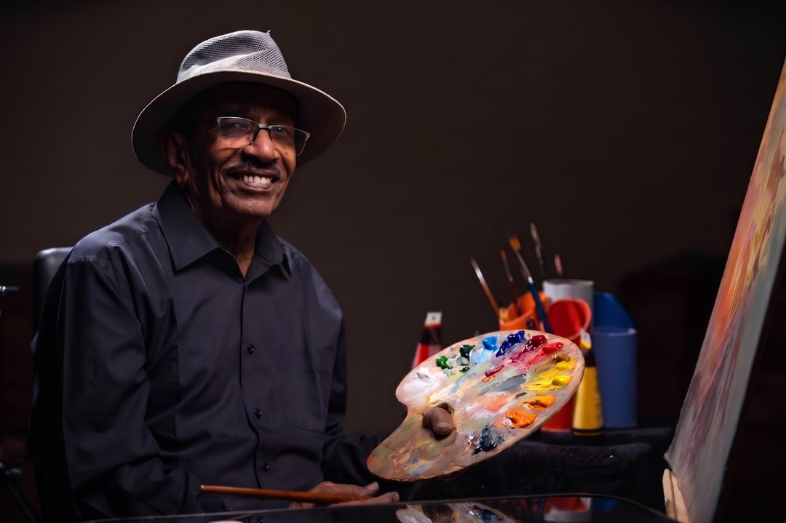
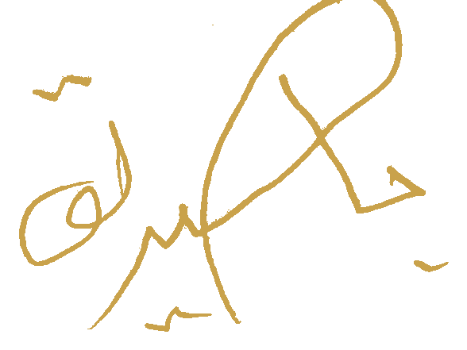

نوبيُّ الجذور، سودانيُّ الوجدان. أكثر من نصف قرنٍ بين الريشة والألوان، يرسم فيها الحنين إلى الأرض، ودفء البيوت الطينية، وسكينة الوجوه التي عبرت الزمن دون أن تفقد نورها.
Nubian in origin, Sudanese in spirit. Half a century of brush and colour, painting a longing for homeland, the warmth of mudbrick houses, and faces that carry their stillness through time.

بابكر صديق عثمان فنان تشكيلي وإعلامي سوداني نوبيّ الجذور، من مدينة عبري بشمال السودان. وُلد في الخرطوم بحري في 15 أكتوبر 1954، ونشأ وترعرع في مدينة ود مدني بولاية الجزيرة، حيث تفتّح وعيه الأول على الفن واللون.
جمع عثمان، على مدى أكثر من خمسة عقود، بين عمله رسّاماً وبين مسيرة إعلامية ثرية في الإذاعة والتلفزيون، فحمل القلم والريشة معاً: أعدّ وقدّم برامج ثقافية وفنية عديدة، وأدار إدارة الديكور والتصميم بتلفزيون السودان، كما عمل مصمم ديكور بتلفزيون الجزيرة.
تنقّلت أعماله ومعارضه بين السودان، والكويت، ومصر، والعراق، وعُمان، وسويسرا، وفرنسا، وكوبا — لتحمل في كل محطة ملامح من ذاكرة سودانية دافئة: بيوت طينية، وخيول بيضاء، ووجوه نساء هادئة تحمل في عيونها حكاية أرضٍ وسلام.
Babiker Siddig Othman is a Sudanese visual artist and veteran broadcaster of Nubian descent, from the town of Abri in northern Sudan. Born in Khartoum Bahri on 15 October 1954, he was raised in Wad Madani, Al Jazirah State, where his first awareness of art and colour took root.
For more than five decades, Othman has carried the painter's brush alongside a rich career in radio and television — producing and presenting numerous cultural and artistic programmes, heading the Decor & Design Department at Sudan Television, and working as a set designer for Al Jazira Television.
His work and exhibitions have travelled across Sudan, Kuwait, Egypt, Iraq, Oman, Switzerland, France and Cuba — each stop carrying traces of a warm Sudanese memory: mudbrick homes, white horses, and the quiet faces of women whose eyes hold a story of land and peace.
"لطالما شعرتُ بدافعٍ قويٍّ نحو الإبداع الفني. منذ صغري كنتُ أرسم وألوّن باستمرار. أعتبر أعمالي بمثابة تفسير لمحاولاتي فهم الحياة والعالم والنفس البشرية."
"I have always felt a powerful drive toward artistic creation. Since childhood, I have been drawing and painting continuously. I consider my work an interpretation of my attempts to understand life, the world, and the human soul."
— بَابِكر صَديق عُثْمان— Babiker Siddig Othman
لم أكن يوماً أسيراً لريشةٍ واحدة أو خامةٍ واحدة. انتقلتُ بين الألوان المائية والباستيل والحبر والخط الهندسي، لأن كل وسيلةٍ تقول ما لا تقوله الأخرى. وحين أرسم بالحبر تحديداً، أعمل بأناةٍ شديدة — خطّاً فوق خط، وظلاً فوق ظل — لأن الصبر نفسه جزءٌ من المعنى، لا مجرد أسلوب في التنفيذ.
في عالم الحبر هذا بالذات، تتكرر أمامي رموزٌ لم أخترها بذهني وحده: الجماجم، والطيور، والحبال، والنساء المحجّبات، والبوم. لا أراها زخرفة، بل محاولاتٍ متكررة لفهم الموت والذاكرة، والقيد والحرية — ثنائياتٌ أعيشها إنساناً قبل أن أرسمها فناناً.
جذوري النوبية حاضرةٌ في كل عمل، ولو بصمت: بيتٌ طيني، حصانٌ أبيض، حليّ امرأة. هذه ليست خلفيةً بصرية فحسب، بل ذاكرةٌ أحملها أينما ذهبت. وحين أرسم وجه طفلٍ جائع أو جمجمةً بين الأحياء، لا أفعل ذلك لأثير، بل لأنني أؤمن أن الفن الذي لا يحمل وجع الناس فنٌّ ناقص. في النهاية، كل لوحةٍ عندي محاولة — ليست دائماً مكتملة، لكنها صادقة.
I was never loyal to a single brush or a single material. I move between watercolour, pastel, ink and geometric line, because each medium says what the others cannot. When I work in ink especially, I proceed with deliberate patience — line over line, shadow over shadow — because that patience is itself part of the meaning, not merely a technique of execution.
Within that world of ink, certain symbols keep returning to me, as though I never chose them with my mind alone: skulls, birds, ropes, veiled women, owls. I do not see them as decoration, but as repeated attempts to understand death and memory, captivity and freedom — dualities I live as a human being before I ever paint them as an artist.
My Nubian roots are present in every work, even in silence: a mudbrick house, a white horse, a woman's jewellery. These are not mere visual backdrops but a memory I carry wherever I go. And when I draw a hungry child's face, or a skull among the living, I do not do it to provoke — I do it because I believe art that does not carry people's pain is incomplete art. In the end, every painting of mine is an attempt — not always finished, but honest.
فيلم وثائقي يأخذكم في رحلة مع الفنان بابكر صديق عثمان، بين محترفه وألوانه وذكرياته — صورة قريبة من الإنسان خلف اللوحات.
A documentary portrait of Babiker Siddig Othman — a close look at the man behind the paintings, his studio, his colours and his memories.
مجموعة مختارة من لوحات الفنان بابكر صديق — بين المائية والتجريد والبورتريه والرسم بالحبر. كل لوحة قطعة أصلية فريدة، متاحة للعرض والاقتناء عبر التواصل المباشر.
A curated collection of original works by Babiker Siddig — spanning watercolour, abstraction, portraiture and ink drawing. Each piece is a unique original, available for viewing and acquisition by direct enquiry.
الأسعار المعروضة تقديرات ابتدائية للتفاوض، والسعر النهائي يُحدَّد حسب القياس الفعلي وخامة العمل.
Listed prices are preliminary starting estimates open to discussion; the final price depends on the actual size and medium of the piece.
أقام الفنان العديد من المعارض الفردية والجماعية داخل السودان وخارجه.
The artist has held numerous solo and group exhibitions in Sudan and abroad.
للاستفسار عن الأسعار والتوفر وطرق الشحن، تواصل مباشرة عبر واتساب أو البريد الإلكتروني، أو عبر النموذج أدناه.
For pricing, availability and shipping, reach out directly via WhatsApp or email, or use the form below.
راسلنا عبر واتساب أو البريد مع ذكر مرجع اللوحة.
Message us via WhatsApp or email with the painting's reference.
نؤكد توفر العمل ونحدد السعر النهائي حسب القياس والخامة.
We confirm availability and finalise the price based on exact size and medium.
نتفق على وسيلة الدفع المناسبة لبلدك.
We agree on a payment method suited to your country.
تُعبَّأ اللوحة بعناية ويُرتَّب شحنها دولياً أو استلامها مباشرة.
The piece is carefully packaged for international shipping or direct pickup.
اختر وسيلة التواصل المفضلة لإرسال استفسارك حول هذه اللوحة مباشرة إلى الفنان.
Choose your preferred channel to send your enquiry about this piece directly to the artist.